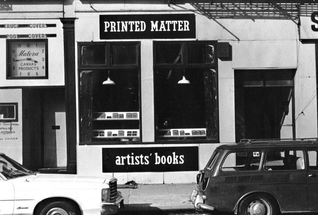

THIS WEBSITE DEALS WITH ART PUBLISHING AS POLITICAL PLATFORM
ART BOOK FAIRS
An art book fair is a type of curated art fair or exhibition for the purpose
of displaying, selling and networking between artists, art book creators,
illustrators, writers, specialty printers, independent publishers and their
audience. The parameters of inclusion vary from fair to fair: some only
include publications which are themselves considered art objects, limited
edition art books, artist multiples or books specifically about an art topic;
others are wider to include graphic novels, cultural magazines, zines,
creative writing, poetry, and other artist projects. Like other art fairs,
an art book fair will not only include works for sale but also artist
installations, projects, happenings, workshops, talks, panel discussions
or book launches. Recursive fairs may run with a yearly theme or prompt
which guides programming.
Unlike a traditional trade fair or book fair (such as the Frankfurt Book Fair),
art book fairs are public and less formal in regards to industry conferencing
or networking; while they do serve as an opportunity for publishers and artists
to commingle, the nature of art book sales is such that there are no sales
or rights marketing as with a regular book fair. Instead, art book fairs
are an aspect of artist-run culture and an address to artmaking in the
neoliberal era. Art book fairs are also a way for viewers to interact
with, collaborate, and learn with and obtain artwork outside of commercial
art institutions. Given the ephemeral and mass-produced nature of
publishing history, "publishing seems to offer," as Offprint Paris director
Yannick Bouillis put it, "an authentic, autonomous space within the art
community. Books and other publishing artifacts such as magazines, posters,
and tapes are—in comparison to artworks—relatively free from public and
market concerns."
History
One early example of art book fair as differentiated from trade book fairs
or art exhibitions is by artist-run non-profit organization
Printed Matter,

which emerged in New York City in the 1960s.
Printed Matter
began a bookstore
and gallery which celebrated publishing as an artistic medium, artist-run culture,
and alternative art practice, an ethos which has carried through to contemporary
art book events. In 2004
Printed Matter
and then director, artist AA Bronson,
launched the first New York Art Book Fair, and later the LA Art Book Fair in
2013. These fairs have grown steadily to an audience well beyond the local
art scenes or literati: the 2015 NY Art Book Fair was host to 370 exhibitors
from 28 countries and had an estimated 35,000 guests in attendance.
As with the Printed Matter
model, art book fairs have emerged around the
world as a way for artist-run or non-profit institutions to generate
awareness with a broader public and fundraise through the sale of
admission, special event tickets, and limited edition artwork. Other
fairs include the Vancouver Art Book Fair, Canada's first international
art book fair, the London Art Book Fair and Tokyo Art Book Fair.